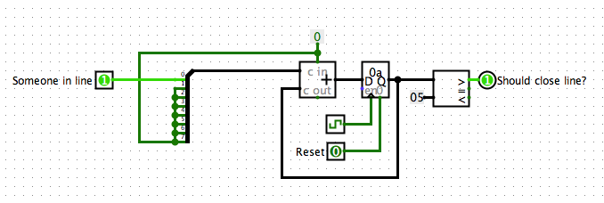
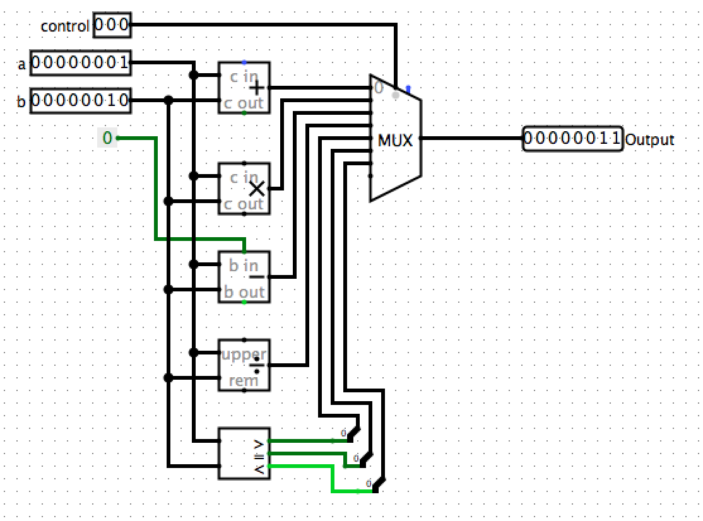

A General Processor
CS 1501 - Lecture 4
Thursday, September 17
I sent out a class email Sunday!
If you did not receive the email, please see me after class so I can grab your computing ID.
Should be at least 5...
Big Recap
- Transistors
- Combining Transistors into Logic Gates
- Adding State
Big Recap
Logic Gates
- AND Gate - True only if both inputs are true.
- OR Gate - True if either input is true.
- NOT Gate - True if input is false.
Big Recap
Introduction to State
- We created a feedback loop to make memory.
- We added a clock so that we could compute in specific intervals of time.
- We could then act on the memory at each step and update it.
SR Latch

Our feedback loop that we added clocks to.
Then we built some counters...

Couting up to five, and lighting up if the number in memory is larger.
But we want Software
It would be incredibly expensive to have to build special hardware for every game or program you wanted to run.
We want to build a function \( f \).
\[ f(\hat{g}, x) = g(x) \]
This is called the Universal Machine.
Giving our Processor Operations
- Add Numbers
- Subtract Numbers
- Multiply Numbers
- Divide Numbers
- AND Numbers
- OR Numbers
- NOT Numbers
We compute all of these operations in parallel, then select the output.

This is called the Arithmetic Logic Unit (ALU).

We have just built the "combinatoral" part of the circuit. Now we just need state.
Running Programs
# x is input
0: x = x - 2
1: if x > 0: goto 0
2: y = 1
3: if x == 0: goto 5
4: y = 0
5: halt
This program calculates whether x is odd.
Program Checklist
We need the following things in order to run this program:
- Arthimetic Logic Unit (for Comparisons and Subtraction)
- Something that represents "x"...
- Something that represents "y"...
- Something that holds the instructions...
- Something that knows what instruction we are on...